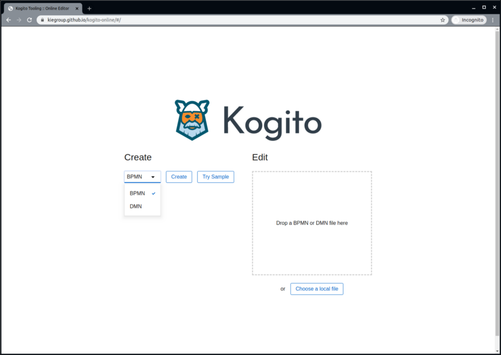
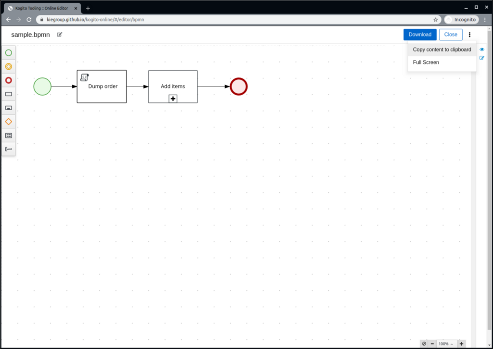
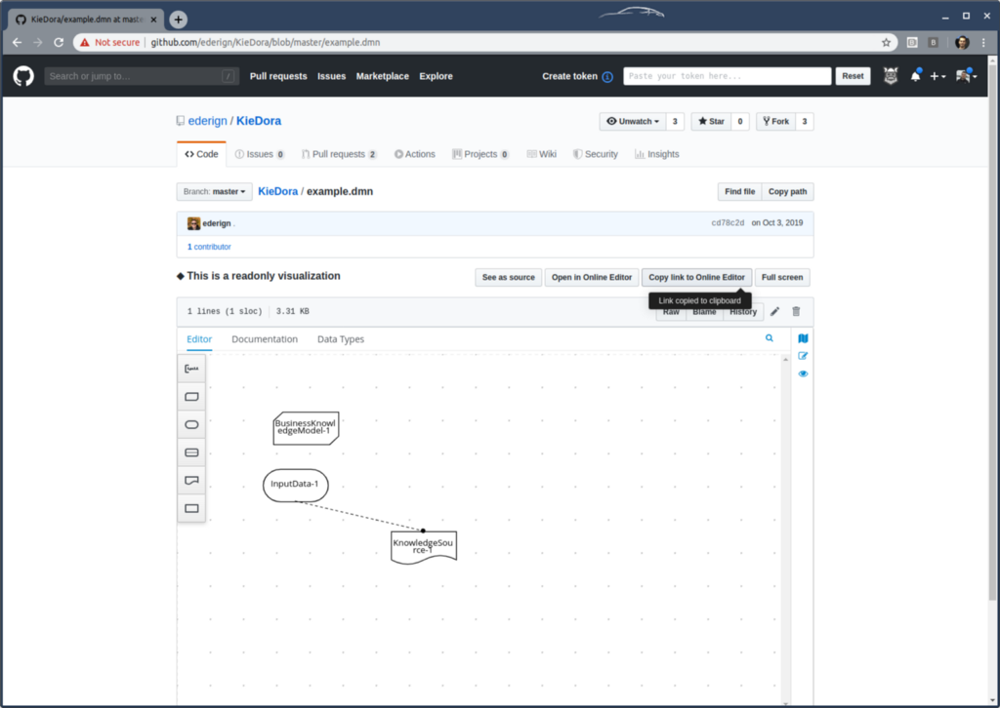

Kogito Online DMN/BPMN Editor and Chrome Extension improvements
Today we released version 0.2.7 of our Online Editor and GitHub Chrome Extension featuring several improvements.
Try a sample DMN/BPMN model on online editor
Now it is possible to try a sample DMN or BPMN model in our Kogito Online Editor. To do that, you can select the type of the model and click “Try Sample”.

Copy model as source to clipboard
If you want to copy a file content without downloading it and opening a text editor, you can just click in the kebab at the top-right corner of the screen and select the option “Copy content to clipboard”.

Create a magic link using the Chrome Extension to open a GitHub file in the Online Editor
While viewing or editing files on GitHub with our Chrome Extension installed, it is now possible to copy a persistent link that opens a GitHub file in the Online Editor directly. To do that, click the “Copy link to Online Editor” button, and paste it wherever you want to.

Open any asset in the Online Editor using a query parameter
Now it is possible to create custom Online Editor URLs that open files from any domain. To do that, you just need to replace the URL to your file and the editor type below:
https://kiegroup.github.io/kogito-online/?file=<FILE_URL>#/editor/<EDITOR_TYPE>
For example:
https://kiegroup.github.io/kogito-online/?file=https://raw.githubusercontent.com/ederign/KieDora/master/example.dmn#/editor/dmn
NOTE: The URL to your file must allow CORS in its response, which should contain the following header: Access-Control-Allow-Origin: *
New features and improvements are in development, so stay tuned for the next releases!
Kogito Online DMN/BPMN Editor and Chrome Extension improvements was originally published in kie-tooling on Medium, where people are continuing the conversation by highlighting and responding to this story.